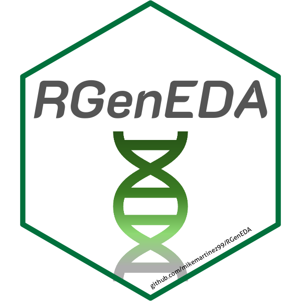
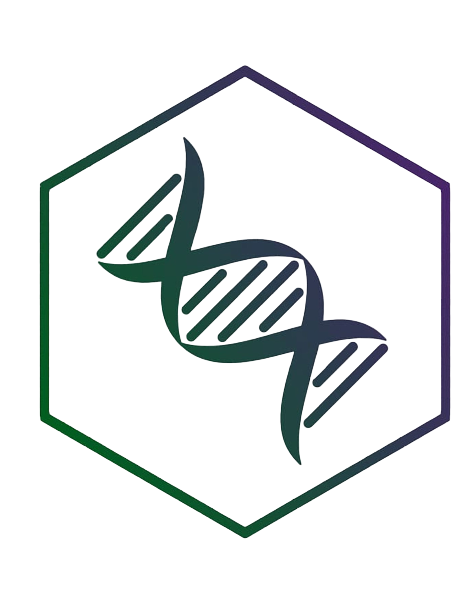

Hello, I'm
Mike
Martinez.
Bioinformatics Research Scientist · Genomics & Multi-Omics
I make sense of complex omics data — from single-cell sequencing and metagenomics to bulk genomics and beyond. Currently building reproducible pipelines and uncovering biological signal at Dartmouth's Center for Quantitative Biology.

Who I Am
About Me
I am a bioinformatics scientist with a passion for making sense of complex omics data and uncovering meaningful patterns that help turn hypotheses into actionable insights. My background is rooted in next-gen sequencing technologies and data analysis, which has allowed me to work across a multitude of omics data modalities — including spatial proteomics via imaging mass cytometry, spatial transcriptomics, single-cell ATAC/RNA-Seq, bulk RNA-Seq, and metagenomics.
I love collaborating with bench scientists, helping them navigate their data, teaching them that bioinformatics is not scary, and learning about their research along the way. I also have experience debugging software, troubleshooting NGS workflows, and setting up reproducible pipelines through workflow management languages like Snakemake.
When I'm not sifting through sequencing files or surfing the command line, you'll probably find me in the gym putting up weights or playing the drums to my favorite nu-metal songs.
Where I've Worked
Experience
- Developed reproducible Snakemake workflows for WES and bulk ATAC-Seq, reducing preprocessing time and enabling increased scalability.
- Supported Dartmouth researchers by developing boutique analysis pipelines for tRNA-Seq and proprietary sequencing strategies.
- Analyzed projects spanning scRNA/ATAC-seq, 10X Spatial (Visium & Xenium), and metagenomics.
- Created the R package RGenEDA for reproducible exploratory data analysis.
- Spearheaded computational methods in R for multi-omics studies including bulk RNA-Seq, 16S sequencing, and targeted metabolomics.
- Conducted full DEG/GSEA analysis of bulk colon tissue to highlight combinatorial chemoprevention effects.
- Analyzed colonic spatial immune architecture via multiplex imaging mass cytometry.
- Leveraged synthetic PacBio and ONT long reads to validate proprietary microbiome clustering software.
- Contributed to pipeline development through custom R scripts for taxonomy call file generation.
- Managed LIMS database and NCBI SRA data deposition.
- Assembled and annotated bacterial genomes using SPAdes and Prokka.
- Investigated fungal communities of T. septentrionalis fungus gardens.
Academic Background
Education
What I've Built
Highlighted Projects

An R package providing a structured, reproducible framework for exploratory data analysis of genomics data — sitting cleanly between raw preprocessing and formal modeling.
View on GitHubA Snakemake workflow for the analysis of miRNAs and isomiRs from high-throughput sequencing data, built for the Dartmouth Data Analytics Core.
View on GitHub
A Snakemake workflow for preprocessing and analysis of targeted whole exome sequencing data, with built-in QC and variant calling steps.
View on GitHubTools of the Trade
Tech Stack
Latest Writing
From the Blog
Exploring how MultiVelo integrates RNA and ATAC modalities to infer cellular dynamics and trajectory.
EDA helps you understand what is driving variation in your data before formal modeling.
Pixi is a blazing-fast, project-based package and environment manager built by the creators of Mamba.